From data to a genomic figure
Genomic figures often combine exon positions on a chromosome, links between genomes, signal depth, and positions along a protein. ggexon connects these views through stored annotations and a ggplot2 plotting grammar.
Each example below presents the input, constructs or prepares the ggexon object, and chooses geoms, scales, and a theme. The small gene models, gene-order matrix, protein counts, and DNA strings are synthetic teaching data. The pairwise and coverage examples use bundled files. Run the chunks in order in an R session with the current version of ggexon installed.
Major data objects
| Object | What it stores | Typical input |
|---|---|---|
SynFeatureAnnotation |
Genes, transcripts, exons, and CDS | GFF3 or GTF |
SynIndividual |
One genome or sample and its annotation layers | Annotation, optional FASTA |
SynSpecies |
Individuals and comparative relationships | Individuals, alignments, homology, trees |
SynPairAlignment, SynMultiAlignment
|
Relationships between genomes | PAF/PSL, or supported multiple-alignment data |
SynBigWigAnnotation, SynVCFAnnotation
|
Region-queryable signal or variants | BigWig or VCF |
SynProteinDomainAnnotation,
SynProteinMutationAnnotation
|
Domains or mutation summaries | Domain and mutation tables |
SynAnnotationPatch |
An explicit gene-model correction | Corrected feature ranges |
HomologyAnnotation |
Reference/query gene mappings | Curated table or imported BLAST results |
SynLayout, SynLocusSet
|
Reusable panel windows or comparable loci | Named coordinate windows |
Plotting functions supplied by ggexon
ggexon() starts the figure. Syn-aware layers resolve
stored annotations when the plot is built; table-based layers use
prepared data. Ordinary ggplot2 scales and themes remain available. A
theme changes appearance; it does not select a genomic window or
transform coordinates.
Geoms
| Function | What it draws |
|---|---|
geom_exon() |
Exon rectangles, transcript backbones, and strand direction |
geom_exon2() |
Exon/CDS/UTR models with explicit introns and optional schematic compression |
geom_genetag() |
One directional gene span, with optional labels and overlap lanes |
geom_genebox() |
Equal-size gene boxes with internal strand arrows |
geom_genelabel() |
Gene labels and their leader lines, including homology-based names |
geom_genelink() |
Straight, elbow, or spline lines between supplied coordinate pairs |
geom_nuclink() |
Nucleotide-alignment ribbons between genomic panels |
geom_synteny_link() |
Interval ribbons for supplied gene, exon, or block relationships |
geom_coverage() |
Continuous coverage or signal tracks |
geom_motif() |
Motif/domain blocks; attached protein domains can be projected onto genomic CDS intervals |
geom_aa_variant() |
Amino-acid variant markers projected onto transcript models |
geom_protein_lollipop() |
A protein backbone, domain blocks, and mutation stems and heads |
geom_mutation_label() |
Mutation labels positioned to match mutation markers |
geom_alignseq() |
Anchored DNA-difference markers or aligned sequence rows |
geom_genomic_tree() |
Attaches a rectangular tree for alignment with genomic panels |
Scales and guides
| Function | What it controls |
|---|---|
scale_x_ggexon_genomic() |
Shared exon-aware intron compression with original genomic coordinate labels |
guide_x_ggexon_piecewise() |
Representative exon and intron scale bars for the compressed genomic x scale |
strip_scale_x() |
Gene-order display widths or explicit shared comparison slots |
strip_scale() |
Compatibility alias for strip_scale_x()
|
scale_x_facet_labels() |
Different x-axis labels for facets sharing a continuous x scale |
scale_panel_annotation() |
Shared or independent annotation-panel y scales, with optional visible limits |
scale_panel_coverage() |
Shared or independent coverage-panel y scales, with optional manual or automatic visible limits |
Facets and panel layout
| Function | What it arranges |
|---|---|
facet_genomics() |
Annotation, coverage, and intervening link panels |
facet_genomictree() |
Genomic panels ordered by tree tips, beside one spanning tree |
center_panel_annotation() |
Centers annotation bodies in their panel views |
set_panel_xlim(), clear_panel_xlim()
|
Store or clear per-individual genomic windows |
effective_panel_windows() |
Inspect the annotation windows resolved for a plot or stored layout |
locus_grid_layout(), use_locus_grid()
|
Prepare and apply layouts for comparable locus windows |
annotate_cross_panel() |
Connect explicitly supplied anchors across panels |
link_panels() |
Connect matching IDs represented by anchors in different panels |
Themes
| Function | When to use it |
|---|---|
theme_ggexon_base() |
A background-free foundation retaining ordinary axes and grids |
theme_ggexon_clean() |
The named shortcut for that clean background-free styling |
theme_ggexon_track() |
Compact genomic tracks, with control over axes, grids, and legends |
theme_ggexon_pairwise() |
Stacked annotation/link/annotation comparisons |
theme_ggexon_genomictree() |
Genomic tracks aligned beside a tree |
theme_ggexon_side_strips() |
Horizontal facet labels on the left or right, added after a complete theme |
Plot preparation and output
| Function | What it prepares |
|---|---|
alignseq_data() |
Anchored columns and difference events from two already aligned DNA strings |
protein_lollipop_data() |
Protein backbone, domain, and mutation layout tables |
protein_mutation_data() |
Access the normalized table in a protein-mutation annotation |
syn_gr_to_exon_df() |
Convert genomic feature ranges to an exon plotting table |
project_domains_to_genome(),
project_mutations_to_genome()
|
Map protein positions through transcript CDS blocks to genomic intervals |
ggexon_output_size() |
Record the intended figure dimensions for downstream layout |
Functions such as aes(),
scale_fill_manual(), scale_x_continuous(),
facet_wrap(), coord_fixed(),
theme(), and ggsave() come from ggplot2. The
examples combine these with the ggexon functions above.
Curating elements within data objects
Curation verbs describe the change made to stored biological information. Updating selected fields differs from replacing a complete gene model; resetting patches restores the base annotation.
| Operation | Function | Effect |
|---|---|---|
| Add relationships | add_homology() |
Insert query-to-reference gene relationships |
| Update fields | update_homology() |
Change supplied columns for matched query genes while preserving other fields |
| Remove relationships | remove_homology() |
Remove selected homology rows, with an optional reference-gene guard |
| Set display labels | set_gene_labels() |
Assign labels while retaining stable biological IDs |
| Map identifiers | map_domain_ids() |
Map domain annotation identifier values to the key used by transcript models |
| Patch gene models | patch_annotation() |
Record an addition, replacement, or removal using
mode = "add", "replace", or
"remove"
|
| Reset patches | reset_patches() |
Restore the base feature annotation and retain assigned display labels |
replace_homology(), delete_homology(),
rename_domain_annotation_ids(), and
clear_patches() remain supported aliases for the
corresponding operations above. Patch mode "drop" remains
an alias for "remove". Use query_*() to
inspect data and subset_*() or filter_*() to
select the data to keep.
1. Exons and alternative transcripts
An exon table contains intervals and transcript membership. Drawing
each row as an unrelated rectangle loses introns and strand direction.
geom_exon() uses the feature hierarchy to draw transcript
models.
Present the input
Create two synthetic genes on chr1. Gene A has a full
transcript and an exon-skipping transcript; gene B is on the opposite
strand. Coordinates are one-based and inclusive, as in GTF. These are
teaching models, not observed gene annotations.
features <- data.frame(
type = c("gene", "transcript", rep("exon", 3), rep("CDS", 3),
"transcript", rep("exon", 2), rep("CDS", 2),
"gene", "transcript", "exon", "exon"),
start = c(101, 101, 101, 501, 901, 101, 501, 901,
101, 101, 901, 101, 901, 1201, 1201, 1201, 1501),
end = c(960, 960, 160, 590, 960, 160, 590, 960,
960, 160, 960, 160, 960, 1560, 1560, 1260, 1560),
strand = c(rep("+", 13), rep("-", 4)),
gene_id = c(rep("geneA", 13), rep("geneB", 4)),
transcript_id = c(NA, rep("A_full", 7), rep("A_skip", 5),
NA, rep("B_only", 3))
)
knitr::kable(features)| type | start | end | strand | gene_id | transcript_id |
|---|---|---|---|---|---|
| gene | 101 | 960 | + | geneA | NA |
| transcript | 101 | 960 | + | geneA | A_full |
| exon | 101 | 160 | + | geneA | A_full |
| exon | 501 | 590 | + | geneA | A_full |
| exon | 901 | 960 | + | geneA | A_full |
| CDS | 101 | 160 | + | geneA | A_full |
| CDS | 501 | 590 | + | geneA | A_full |
| CDS | 901 | 960 | + | geneA | A_full |
| transcript | 101 | 960 | + | geneA | A_skip |
| exon | 101 | 160 | + | geneA | A_skip |
| exon | 901 | 960 | + | geneA | A_skip |
| CDS | 101 | 160 | + | geneA | A_skip |
| CDS | 901 | 960 | + | geneA | A_skip |
| gene | 1201 | 1560 | - | geneB | NA |
| transcript | 1201 | 1560 | - | geneB | B_only |
| exon | 1201 | 1260 | - | geneB | B_only |
| exon | 1501 | 1560 | - | geneB | B_only |
Write the records as a standard nine-column GTF. Substitute your own GTF or GFF3 path when working with real annotations.
attributes <- paste0('gene_id "', features$gene_id, '";')
has_transcript <- !is.na(features$transcript_id)
attributes[has_transcript] <- paste0(
attributes[has_transcript], ' transcript_id "',
features$transcript_id[has_transcript], '";'
)
gtf <- data.frame(
seqname = "chr1", source = "synthetic", type = features$type,
start = features$start, end = features$end, score = ".",
strand = features$strand,
phase = ifelse(features$type == "CDS", "0", "."), attributes = attributes
)
gtf_file <- tempfile(fileext = ".gtf")
write.table(gtf, gtf_file, sep = "\t", quote = FALSE,
row.names = FALSE, col.names = FALSE)Construct and inspect the object
SynIndividual(annotation_file = ...) attaches a default
SynFeatureAnnotation. A FASTA is optional for annotation
plotting; sequence extraction and translation require one.
load_annotation() materializes the features so that we can
inspect them before drawing.
model <- SynIndividual(
annotation_file = gtf_file, annotation_format = "gtf", id = "teaching"
)
model <- load_annotation(model)
class(model)
#> [1] "SynIndividual"
#> attr(,"package")
#> [1] "ggexon"
class(get_annotation(model))
#> [1] "SynFeatureAnnotation"
#> attr(,"package")
#> [1] "ggexon"
exons <- query_features(model, feature_type = "exon", all = TRUE)
knitr::kable(as.data.frame(exons)[,
c("seqnames", "start", "end", "strand", "gene_id", "transcript_id")])| seqnames | start | end | strand | gene_id | transcript_id |
|---|---|---|---|---|---|
| chr1 | 101 | 160 | + | geneA | A_full |
| chr1 | 501 | 590 | + | geneA | A_full |
| chr1 | 901 | 960 | + | geneA | A_full |
| chr1 | 101 | 160 | + | geneA | A_skip |
| chr1 | 901 | 960 | + | geneA | A_skip |
| chr1 | 1201 | 1260 | - | geneB | B_only |
| chr1 | 1501 | 1560 | - | geneB | B_only |
Choose the geom, scales, and theme
Map transcript IDs to fill to distinguish isoforms. The ordinary
continuous x scale preserves genomic spacing. The track theme hides the
y axis used to position models; show_legend = TRUE retains
the transcript legend.
transcript_colours <- c(A_full = "#0072B2", A_skip = "#D55E00", B_only = "#009E73")
p_exons <- ggexon(model) +
geom_exon(
aes(fill = transcript_id), chr = "chr1", subset = c(80, 1600),
transcript_arrow_length = 30
) +
scale_fill_manual(values = transcript_colours, name = "Transcript") +
scale_x_continuous(breaks = c(100, 500, 900, 1300, 1600),
labels = scales::label_number(big.mark = ",")) +
theme_ggexon_track(base_size = 10, show_legend = TRUE)
p_exons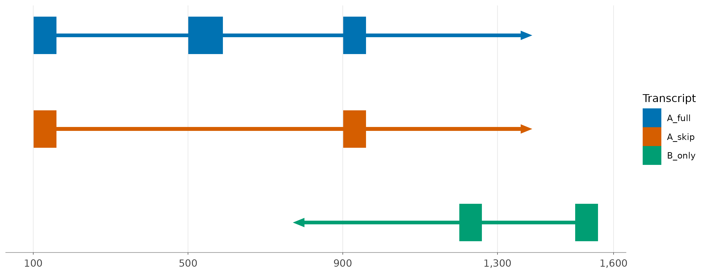
The x distances are base pairs. The missing middle exon in
A_skip comes from the input annotation; ggexon does not
infer alternative splicing.
2. Compress introns while retaining genomic labels
Long introns can make exons too small to compare. A shared exon-aware scale compresses gaps while keeping transcripts aligned, helping you compare exon structure across isoforms.
Present the input
Reuse the synthetic GTF and inspect gene A’s exon rows.
knitr::kable(features[features$gene_id == "geneA" & features$type == "exon", ])| type | start | end | strand | gene_id | transcript_id | |
|---|---|---|---|---|---|---|
| 3 | exon | 101 | 160 | + | geneA | A_full |
| 4 | exon | 501 | 590 | + | geneA | A_full |
| 5 | exon | 901 | 960 | + | geneA | A_full |
| 10 | exon | 101 | 160 | + | geneA | A_skip |
| 11 | exon | 901 | 960 | + | geneA | A_skip |
Prepare the object
Create a copy restricted to the first locus, leaving
model reusable.
gene_a <- subset_individual(model, chr = "chr1", start = 80, end = 980)
query_features(gene_a, feature_type = "exon", all = TRUE)
#> GRanges object with 5 ranges and 7 metadata columns:
#> seqnames ranges strand | source type score phase
#> <Rle> <IRanges> <Rle> | <factor> <character> <numeric> <character>
#> [1] chr1 101-160 + | synthetic exon NA <NA>
#> [2] chr1 501-590 + | synthetic exon NA <NA>
#> [3] chr1 901-960 + | synthetic exon NA <NA>
#> [4] chr1 101-160 + | synthetic exon NA <NA>
#> [5] chr1 901-960 + | synthetic exon NA <NA>
#> gene_id transcript_id gene_name
#> <character> <character> <character>
#> [1] geneA A_full geneA
#> [2] geneA A_full geneA
#> [3] geneA A_full geneA
#> [4] geneA A_skip geneA
#> [5] geneA A_skip geneA
#> -------
#> seqinfo: 1 sequence from an unspecified genome; no seqlengthsChoose the geom, scales, and theme
geom_exon2() draws explicit chevron introns. Disable its
schematic compression so scale_x_ggexon_genomic() controls
the transformation across the panel. A factor of 8 displays eligible
gaps at one eighth of their genomic length while preserving exon
widths.
p_compressed <- ggexon(gene_a) +
geom_exon2(
aes(fill = transcript_id), chr = "chr1", compress_introns = FALSE,
arrow_width = 12
) +
scale_x_ggexon_genomic(intron_factor = 8, n.breaks = 4) +
scale_fill_manual(values = transcript_colours, name = "Transcript") +
theme_ggexon_track(base_size = 10, show_legend = TRUE)
p_compressed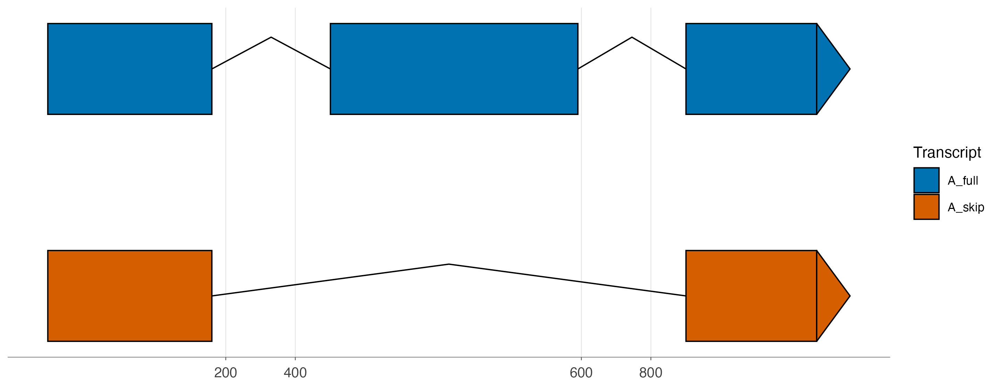
Ticks report original genomic positions, but equal display distances across exons and introns no longer imply equal base-pair distances. A piecewise guide can show separate representative exon and intron scale bars.
ggexon(gene_a) +
geom_exon2(
aes(fill = transcript_id), chr = "chr1", compress_introns = FALSE,
arrow_width = 12
) +
scale_x_ggexon_genomic(
intron_factor = 8, guide = guide_x_ggexon_piecewise(by = "panel")
) +
scale_fill_manual(values = transcript_colours) +
theme_ggexon_track(base_size = 10)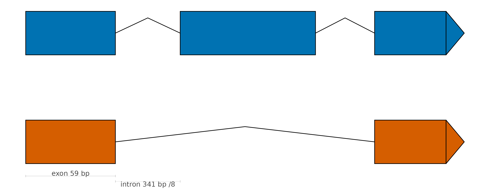
With explicit CDS and UTR records,
geom_exon2(annotation_type = "all") can distinguish their
box heights. Its default compress_introns = TRUE offers
another schematic view; choose one compression method deliberately.
3. Gene spans and readable labels
For a locus overview, transcript detail can hide gene order. A directional tag gives one span per gene. Separate labels keep names readable without replacing the stable gene IDs used in computation.
Present the input
| gene_id | start | end | strand | |
|---|---|---|---|---|
| 1 | geneA | 101 | 960 | + |
| 14 | geneB | 1201 | 1560 | - |
labels <- c(geneA = "Gene A (two isoforms)", geneB = "Gene B")Prepare the object
set_gene_labels() returns an updated object carrying
plot labels alongside the original IDs.
labelled_model <- set_gene_labels(model, labels)Choose the geom, scales, and theme
Suppress built-in tag labels and add geom_genelabel()
for explicit placement. collapse_tandem = TRUE also
combines adjacent genes sharing a label. Retain a base-pair axis because
gene spans and spacing matter here.
ggexon(labelled_model) +
geom_genetag(aes(fill = gene_id), chr = "chr1", show_label = FALSE) +
geom_genelabel(chr = "chr1", label_direction = "top", size = 3,
collapse_tandem = TRUE, panel_width_inch = 7) +
scale_fill_manual(values = c(geneA = "#0072B2", geneB = "#009E73")) +
scale_x_continuous(labels = scales::label_number(big.mark = ","),
expand = expansion(mult = 0.08)) +
theme_ggexon_track(base_size = 10)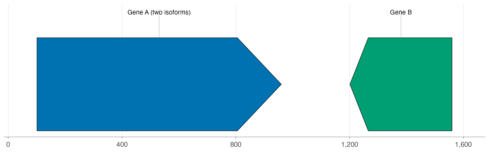
For crowded loci, gene_layout = "stack" or
"nested" separates overlapping bodies. For cross-species
names, attach a HomologyAnnotation to a
SynSpecies and use it through
geom_genelabel(). Labels alone do not establish
homology.
4. Pairwise nucleotide alignments
Two genomes can contain the same locus at different chromosome
positions. SynSpecies stores their annotations and
alignment together; facet_genomics() places links between
their source tracks.
Present the input
Use the bundled XZ1516 and N2 annotations and a small PAF alignment. This example needs neither a download nor user-supplied files.
compact_dir <- system.file("extdata", "compact_synspecies", package = "ggexon")
xz_gff <- file.path(compact_dir, "caenorhabditis_XZ1516.gff3")
n2_gtf <- file.path(compact_dir, "c_elegans.PRJNA13758.WS285.canonical_geneset.gtf")
paf_file <- file.path(compact_dir, "V_alginment.paf")
stopifnot(file.exists(xz_gff), file.exists(n2_gtf), file.exists(paf_file))
cat(readLines(xz_gff, n = 5), sep = "\n")
#> ##gff-version 3
#> III_RagTag funannotate gene 448 2094 . - . ID=FUN_000001;
#> III_RagTag funannotate mRNA 448 2094 . - . ID=FUN_000001-T1;Parent=FUN_000001;product=hypothetical protein;
#> III_RagTag funannotate exon 1994 2094 . - . ID=FUN_000001-T1.exon1;Parent=FUN_000001-T1;
#> III_RagTag funannotate exon 735 1344 . - . ID=FUN_000001-T1.exon2;Parent=FUN_000001-T1;
cat(readLines(n2_gtf, n = 3), sep = "\n")
#> V WormBase gene 20448270 20453184 . - . gene_id "WBGene00009848"; gene_version "1"; gene_source "WormBase"; gene_biotype "protein_coding"; gene_name "F48F5.6";
#> V WormBase transcript 20448275 20449959 . - . gene_id "WBGene00009848"; gene_version "1"; transcript_id "F48F5.6a.1"; gene_source "WormBase"; gene_biotype "protein_coding"; transcript_source "WormBase"; transcript_biotype "protein_coding";
#> V WormBase exon 20449750 20449959 . - . gene_id "WBGene00009848"; gene_version "1"; transcript_id "F48F5.6a.1"; exon_number "1"; gene_source "WormBase"; gene_biotype "protein_coding"; transcript_source "WormBase"; transcript_biotype "protein_coding"; exon_id "F48F5.6a.1.e1";
raw_paf <- read.delim(paf_file, header = FALSE, comment.char = "")
names(raw_paf)[1:12] <- c(
"query", "qlen", "qstart", "qend", "strand", "target", "tlen",
"tstart", "tend", "matches", "alen", "mapq"
)
knitr::kable(head(raw_paf[, c("query", "qstart", "qend", "strand", "alen")], 4))| query | qstart | qend | strand | alen |
|---|---|---|---|---|
| V_RagTag | 21580812 | 21581913 | + | 1104 |
| V_RagTag | 21581910 | 21584356 | - | 2552 |
| V_RagTag | 21579732 | 21580830 | - | 1131 |
| V_RagTag | 21574445 | 21579192 | - | 5159 |
| target | tstart | tend | matches | mapq |
|---|---|---|---|---|
| V | 18218473 | 18219520 | 793 | 255 |
| V | 20456948 | 20459445 | 2225 | 255 |
| V | 20459441 | 20460565 | 1025 | 255 |
| V | 20460561 | 20465040 | 3806 | 255 |
Raw PAF uses zero-based starts and half-open intervals. The ggexon importer normalizes returned start/end columns to one-based closed intervals. Let it perform this conversion once.
Construct and inspect the objects
xz <- SynIndividual(annotation_file = xz_gff, id = "XZ1516")
n2 <- SynIndividual(annotation_file = n2_gtf, annotation_format = "gtf", id = "N2")
comparison <- SynSpecies(name = "Caenorhabditis pair")
comparison <- add_individual(comparison, xz)
comparison <- add_individual(comparison, n2)
comparison <- add_pairwise_alignment(
comparison,
SynPairAlignment(
name = "XZ1516_vs_N2", query_individual = "XZ1516",
target_individual = "N2", file = paf_file, format = "paf"
)
)
individual_names(comparison)
#> [1] "XZ1516" "N2"
aligned_blocks <- pairwise_alignment_data(
comparison, alignment = "XZ1516_vs_N2",
subset = c(XZ1516 = "RagTag_V:21574445-21584356"), filter = 200
)
knitr::kable(head(aligned_blocks[, intersect(
c("qname", "qstart", "qend", "tname", "tstart", "tend", "strand", "alen"),
names(aligned_blocks)
)], 6))| qstart | qend | tstart | tend | strand | alen |
|---|---|---|---|---|---|
| 21580813 | 21581913 | 18218474 | 18219520 | + | 1104 |
| 21581911 | 21584356 | 20456949 | 20459445 | - | 2552 |
| 21579733 | 21580830 | 20459442 | 20460565 | - | 1131 |
| 21574446 | 21579192 | 20460562 | 20465040 | - | 5159 |
filter = 200 removes short alignment fragments from this
query result, leaving the stored alignment unchanged.
subset_pairwise_alignment() and
filter_pairwise_alignment() expose these operations
separately.
Choose the geom, scales, facet, and theme
geom_nuclink() derives a comparison window from XZ1516
coordinates and resolves the corresponding N2 region. Independent x
ranges show each genome’s own positions. The annotation y policy
controls model layout. Hide the link panel’s axes because the ribbons
connect the two annotation rulers rather than defining a third genomic
coordinate system.
p_pairwise <- ggexon(comparison) +
geom_exon(species = c("N2", "XZ1516"), fill = "#0072B2") +
geom_nuclink(
reference = "XZ1516", chr = "RagTag_V",
subset = c(21574445, 21584356), alignment = "XZ1516_vs_N2",
fill = "#56B4E9", alpha = 0.55
) +
facet_genomics(vars(track), scales = "free_x", ncol = 1,
strip.position = "left", vertical = "center",
link_axis = "none", link_strip = "blank", link_panel_height = 0.6) +
scale_panel_annotation("fixed_y") +
scale_x_continuous(labels = scales::label_number(big.mark = ",")) +
theme_ggexon_pairwise(base_size = 10)
p_pairwise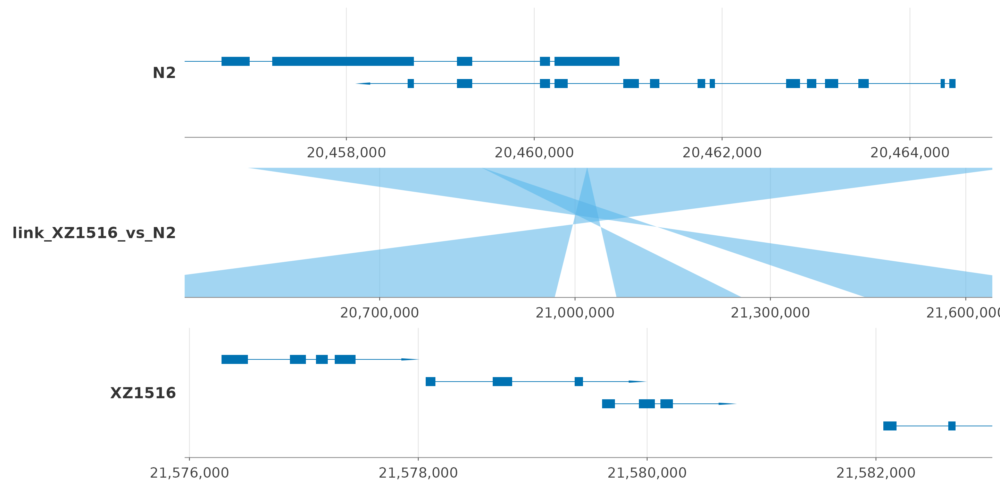
The GFF uses V_RagTag; the resolver also accepts the
RagTag_V alias used in the plotting call. Inspect seqnames
when preparing your own files.
Omitting species on a SynSpecies exon layer
selects all stored individuals. Select it explicitly for a subset. For
repeated figures, set_panel_xlim() stores named
per-individual windows on the comparison’s SynLayout;
clear_panel_xlim() removes the overrides.
SynMultiAlignment supports ODGI-backed comparisons. It
can store already parsed MAF data through data, but
load_alignment() does not parse MAF files. The class and verb reference
describes these larger workflows.
5. Gene-level synteny from an interval table
A curated ortholog link has a different interpretation from a
nucleotide alignment. geom_synteny_link() draws supplied
interval relationships with the same panel machinery; it does not infer
those relationships.
Present the input
Two synthetic loci contain matched genes at different positions. The
family assignments are supplied teaching data.
panel_order <- c("reference", "link_reference_query", "query")
genes <- data.frame(
track = factor(rep(c("reference", "query"), each = 2), levels = panel_order),
xmin = c(100, 400, 1100, 1600), xmax = c(250, 600, 1300, 1750),
y = 1, strand = c("+", "-", "+", "-"), gene = rep(c("A", "B"), 2)
)
relationships <- data.frame(
family = c("A", "B"), tstart = c(100, 400), tend = c(250, 600),
qstart = c(1100, 1600), qend = c(1300, 1750), strand = "+"
)
knitr::kable(genes)| track | xmin | xmax | y | strand | gene |
|---|---|---|---|---|---|
| reference | 100 | 250 | 1 | + | A |
| reference | 400 | 600 | 1 | - | B |
| query | 1100 | 1300 | 1 | + | A |
| query | 1600 | 1750 | 1 | - | B |
knitr::kable(relationships)| family | tstart | tend | qstart | qend | strand |
|---|---|---|---|---|---|
| A | 100 | 250 | 1100 | 1300 | + |
| B | 400 | 600 | 1600 | 1750 | + |
Prepare the plotting data
Tables are valid inputs too. Add source track and chromosome names to
route ribbons to their annotation panels. This prepared table workflow
does not require a SynPairAlignment.
Choose the geom, scales, facet, and theme
Share a named palette between tags and ribbons so colour has one meaning. Independent base-pair axes retain the two loci’s native coordinates.
ggexon() +
geom_genetag(data = genes, aes(fill = gene), show_label = FALSE) +
geom_synteny_link(
data = synteny,
aes(tspecies = tspecies, tchr = tchr, tstart = tstart, tend = tend,
qspecies = qspecies, qchr = qchr, qstart = qstart, qend = qend,
strand = strand, group = group, fill = family),
inherit.aes = FALSE, alpha = 0.45
) +
facet_genomics(vars(track), scales = "free_x", ncol = 1,
strip.position = "left", vertical = "center",
link_axis = "none", link_strip = "blank", link_panel_height = 0.6) +
scale_fill_manual(values = c(A = "#0072B2", B = "#D55E00"), name = "Family") +
scale_x_continuous(labels = scales::label_number()) +
theme_ggexon_pairwise(base_size = 10, show_legend = TRUE)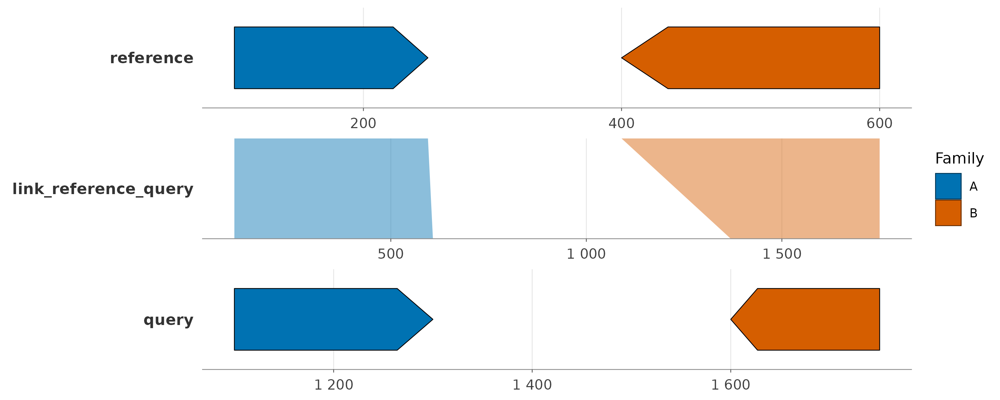
6. Raw BigWig coverage beside gene annotation
Comparing a continuous signal with a gene model requires a shared genomic window and a separate quantitative y scale. Signal layers keep the raw measurements attached to the individual rather than mixing them into feature annotation rows.
Present the input
The bundled PEEL-1 fixture contains raw depth BigWigs and a WS285 GTF subset. Here two strains share one chromosome-I window. Start by inspecting the GTF as text: its nine columns contain genomic coordinates and feature attributes. BigWig is binary, so inspect its records with a region query instead of a text reader. The BigWig backend runs on macOS and Linux, and is unsupported on Windows.
coverage_dir <- system.file("extdata", "peel1_coverage", package = "ggexon")
coverage_gtf <- file.path(coverage_dir, "WS285.ugt31-zeel1-peel1-nekl1.gtf")
coverage_strains <- c("XZ1516", "ECA2091")
cat(readLines(coverage_gtf, n = 5), sep = "\n")
#> #!genebuild-version WS285
#> I WormBase gene 2333338 2338693 . + . gene_id "WBGene00021464"; gene_version "1"; gene_source "WormBase"; gene_biotype "protein_coding"; gene_name "ugt-31";
#> I WormBase transcript 2333338 2338693 . + . gene_id "WBGene00021464"; gene_version "1"; transcript_id "Y39G10AR.6.1"; gene_source "WormBase"; gene_biotype "protein_coding"; transcript_source "WormBase"; transcript_biotype "protein_coding";
#> I WormBase exon 2333338 2333485 . + . gene_id "WBGene00021464"; gene_version "1"; transcript_id "Y39G10AR.6.1"; exon_number "1"; gene_source "WormBase"; gene_biotype "protein_coding"; transcript_source "WormBase"; transcript_biotype "protein_coding"; exon_id "Y39G10AR.6.1.e1";
#> I WormBase CDS 2333342 2333485 . + 0 gene_id "WBGene00021464"; gene_version "1"; transcript_id "Y39G10AR.6.1"; exon_number "1"; gene_source "WormBase"; gene_biotype "protein_coding"; transcript_source "WormBase"; transcript_biotype "protein_coding"; protein_id "Y39G10AR.6.1";
first_signal <- SynBigWigAnnotation(
name = "coverage",
bigwig_file = file.path(coverage_dir, "XZ1516.raw.bw"),
metadata = list(signal_unit = "raw_depth")
)
head(as.data.frame(query_signal(
first_signal, chr = "I", start = 2332338L, end = 2373985L
)))
#> seqnames start end width strand score
#> 1 I 2332338 2332339 2 * 41
#> 2 I 2332340 2332343 4 * 39
#> 3 I 2332344 2332344 1 * 40
#> 4 I 2332345 2332350 6 * 39
#> 5 I 2332351 2332351 1 * 41
#> 6 I 2332352 2332352 1 * 40query_signal() returns intervals with a
score, rather than requiring one row for every base. The
imported table uses 1-based inclusive genomic coordinates. The metadata
records the unit; it does not normalize the scores.
Construct and inspect the objects
coverage_species <- SynSpecies(name = "PEEL-1 coverage")
for (strain in coverage_strains) {
one_strain <- SynIndividual(
annotation_file = coverage_gtf, annotation_format = "gtf", id = strain
)
one_strain <- add_annotation(one_strain, SynBigWigAnnotation(
name = "coverage",
bigwig_file = file.path(coverage_dir, paste0(strain, ".raw.bw")),
metadata = list(signal_unit = "raw_depth")
))
coverage_species <- add_individual(coverage_species, one_strain)
}
individual_names(coverage_species)
#> [1] "XZ1516" "ECA2091"Each individual owns a gene model and a named signal layer.
geom_coverage() resolves that layer for both strains; the
exon request supplies their common viewing window and draws one
representative gene model below the signals.
Choose the geom, scales, facet, and theme
coverage_layers <- ggexon(coverage_species) +
geom_coverage(annotation = "coverage", fill = "#4C78A8") +
geom_exon(
species = "XZ1516", chr = "I", subset = c(2332338L, 2373985L),
annotation_type = "exon"
) +
facet_genomics(vars(track), ncol = 1, strip.position = "left") +
center_panel_annotation() +
scale_x_continuous(labels = scales::label_comma(), oob = scales::oob_keep) +
labs(x = "Chromosome I position (bp)") +
theme_ggexon_track(base_size = 10) +
theme_ggexon_side_strips("left", base_size = 10) +
theme(axis.title.x = element_text())
coverage_plot <- coverage_layers + scale_panel_coverage("fixed_y")
coverage_plot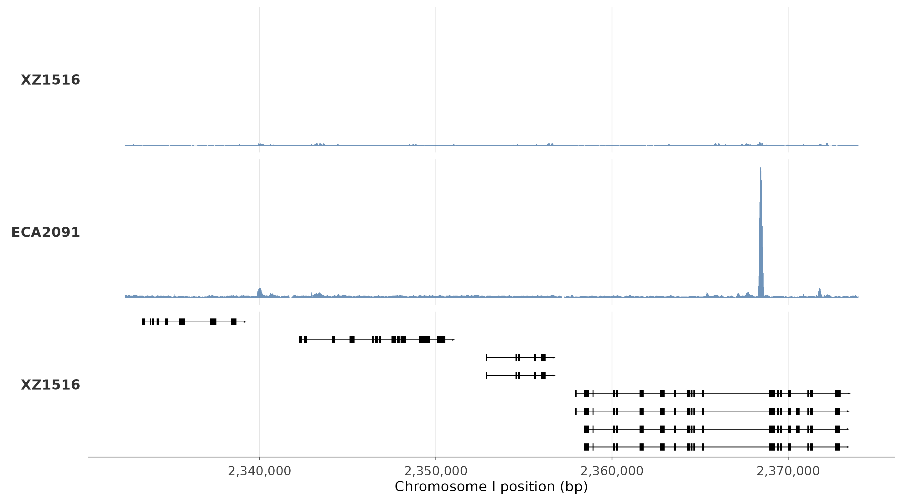
The explicit fixed_y policy makes equal vertical heights
comparable across coverage panels.
center_panel_annotation() adjusts the separate annotation
panel’s view. The track theme hides y labels used for annotation layout,
while the side strip helper turns strain labels into readable horizontal
text. This view compares signal shape and shared heights; inspect the
queried score values for exact depths because y tick labels
are hidden. The large ECA2091 peak sets the shared depth range, making
the other signal look low. oob_keep retains boundary
intervals for clipping at the panel edge.
Replace the coverage policy with
scale_panel_coverage("free_y") to inspect each strain on
its own depth range; equal heights then need not mean equal depth.
Adding auto = TRUE places each panel’s span-weighted median
at 85% of its height and clips higher peaks in the view. Neither option
changes raw scores. Keep a linear genomic x axis: exon/intron
compression through scale_x_ggexon_genomic() is unsupported
for continuous coverage tracks.
coverage_layers + scale_panel_coverage("free_y", auto = TRUE)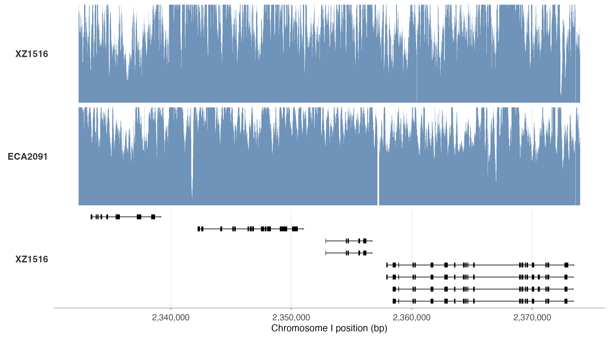
This second view reveals local signal structure in each strain. The peak clipping and independent y ranges mean its panel heights cannot be compared as absolute depths. See the coverage example for the full strain panel and fixture provenance.
7. Protein mutation counts and domains
A protein summary removes introns from the view and places mutation counts next to functional regions. This helps compare residues across a protein without treating their genomic distances as protein distances.
Present the input
Protein positions and genomic positions describe different coordinate systems. For this example, create a synthetic mutation summary for a 160-residue protein, plus two synthetic domain intervals. These are teaching data, not biological claims. Counts describe samples carrying each mutation.
raw_mutations <- data.frame(
gene = "demo-protein",
event_type = "substitution",
mutation_hash_or_notation = c("A#18#V", "K#42#R", "G#88#D", "S#140#F"),
sample_count = c(2L, 5L, 12L, 20L)
)
protein_domains <- data.frame(
start = c(10L, 85L), end = c(60L, 145L),
Domain = c("Binding", "Catalytic")
)
raw_mutations
#> gene event_type mutation_hash_or_notation sample_count
#> 1 demo-protein substitution A#18#V 2
#> 2 demo-protein substitution K#42#R 5
#> 3 demo-protein substitution G#88#D 12
#> 4 demo-protein substitution S#140#F 20
protein_domains
#> start end Domain
#> 1 10 60 Binding
#> 2 85 145 CatalyticThe reader bridges a raw count file and the normalized mutation table
expected by the annotation object. It adds gene_id,
position, ref, alt,
mutation, and source_row_id. Passing
mutation_data to the constructor stores this already
normalized table; the constructor does not parse it again.
Construct and inspect the object
mutation_file <- tempfile(fileext = ".tsv")
write.table(raw_mutations, mutation_file, sep = "\t", quote = FALSE, row.names = FALSE)
normalized_mutations <- read_protein_mutation_counts(mutation_file)
protein_individual <- add_annotation(
SynIndividual(id = "synthetic-cohort"),
SynProteinMutationAnnotation(
name = "mutation_counts", mutation_file = mutation_file,
mutation_data = normalized_mutations
)
)
protein_mutations <- query_protein_mutations(
protein_individual, annotation = "mutation_counts", genes = "demo-protein"
)
protein_mutations[, c("gene_id", "position", "ref", "alt", "mutation", "sample_count")]
#> gene_id position ref alt mutation sample_count
#> 1 demo-protein 18 A V A18V 2
#> 2 demo-protein 42 K R K42R 5
#> 3 demo-protein 88 G D G88D 12
#> 4 demo-protein 140 S F S140F 20geom_protein_lollipop() takes ordinary mutation and
domain tables, so query the attached annotation first. Inspect its
preparation helper to see how positions become backbone, domain, stem,
and head data. With the identity transform and the target range equal to
the observed count range, the helper keeps head heights equal to sample
counts for these data.
Choose the geom, scales, and theme
count_range <- range(protein_mutations$sample_count)
prepared_protein <- protein_lollipop_data(
mutations = protein_mutations, domains = protein_domains, protein_length = 160,
mutation_y_by = "sample_count", mutation_y_range = count_range,
track_ymin = -1.5, track_ymax = -1,
domain_default_ymin = -1.8, domain_default_ymax = -0.7
)
prepared_protein$mutations[, c("position", "lollipop_x", "lollipop_y", "lollipop_domain")]
#> position lollipop_x lollipop_y lollipop_domain
#> 1 18 18 2 Binding
#> 2 42 42 5 Binding
#> 3 88 88 12 Catalytic
#> 4 140 140 20 Catalytic
protein_plot <- ggplot() +
geom_protein_lollipop(
mutations = protein_mutations, domains = protein_domains, protein_length = 160,
mutation_y_by = "sample_count", mutation_y_range = count_range,
track_ymin = -1.5, track_ymax = -1,
domain_default_ymin = -1.8, domain_default_ymax = -0.7,
point_colour = "#222222", point_size = 2.5
) +
geom_mutation_label(
mutations = protein_mutations, mutation_y_by = "sample_count",
mutation_y_range = count_range, label_nudge_y = 0.8,
angle = 0, vjust = 0, size = 3
) +
scale_fill_manual(values = c(Binding = "#0072B2", Catalytic = "#E69F00")) +
scale_x_continuous(breaks = seq(0, 160, 40), limits = c(0, 160)) +
scale_y_continuous(breaks = c(0, 5, 10, 15, 20), limits = c(-2, 23)) +
labs(x = "Amino-acid position", y = "Samples with mutation", fill = "Domain") +
theme_ggexon_track(base_size = 10, show_y_axis = TRUE, show_legend = TRUE) +
theme(axis.title = element_text())
protein_plot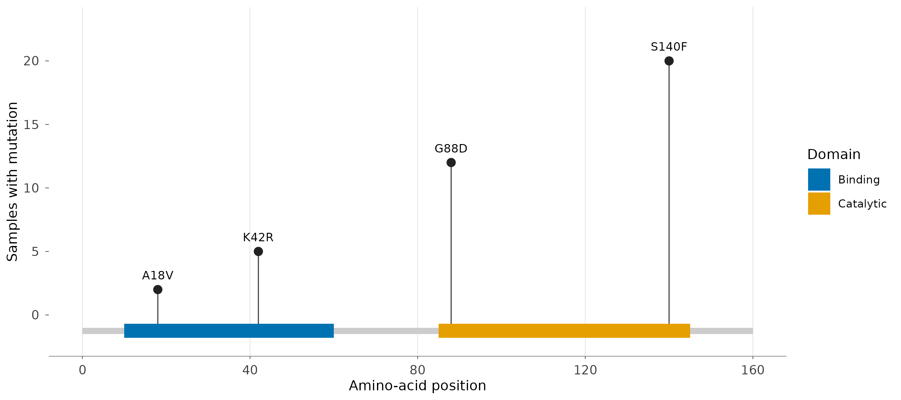
The label layer repeats the head-height settings so each label
follows its mutation. Domain blocks sit below zero; the labeled y ticks
refer to sample counts. Keeping show_y_axis = TRUE matters
here because y carries a measured quantity. With the default lollipop
height range, heights would be rescaled layout positions and should not
be labeled as raw counts. No genomic x scale or facet is needed for this
single protein-coordinate track.
Project protein features onto the genomic model
A protein residue number is not a chromosome coordinate. Projection follows the transcript’s CDS blocks, so one protein interval can occupy several exons. This example reconnects gene A’s isoforms with a synthetic genome, then places a domain and a mutation on the exon models in genomic base pairs.
Present the raw data
Reuse gtf_file from the first example. Its full
transcript contains three CDS blocks; A_skip uses the first
and last. Fill a 1,700-base chr1 with unknown bases, then
insert complete coding blocks. The first block starts with
ATG, the last ends with TAA, and all CDS
phases are zero.
coding_blocks <- data.frame(
start = c(101L, 501L, 901L), end = c(160L, 590L, 960L),
dna = c(paste0("ATG", strrep("GCC", 19)), strrep("GCC", 30),
paste0(strrep("GCC", 19), "TAA"))
)
coding_blocks$width <- nchar(coding_blocks$dna)
knitr::kable(coding_blocks[, c("start", "end", "width")])| start | end | width |
|---|---|---|
| 101 | 160 | 60 |
| 501 | 590 | 90 |
| 901 | 960 | 60 |
domain_input <- data.frame(
transcript_id = "A_full", domain = "Teaching domain",
start = 15L, end = 30L, analysis = "Pfam"
)
mutation_input <- data.frame(
gene_id = "geneA", position = 25L, ref = "A", alt = "V",
sample_count = 4L, mutation = "A25V", source_row_id = 1L
)
knitr::kable(domain_input)| transcript_id | domain | start | end | analysis |
|---|---|---|---|---|
| A_full | Teaching domain | 15 | 30 | Pfam |
knitr::kable(mutation_input)| gene_id | position | ref | alt | sample_count | mutation | source_row_id |
|---|---|---|---|---|---|---|
| geneA | 25 | A | V | 4 | A25V | 1 |
Domain bounds and mutation positions above are one-based
amino-acid coordinates. The mutation table is already
normalized; source_row_id records its input row. It
describes one synthetic gene-level mutation, which will be projected
separately onto each matching isoform.
Construct the sequence and annotation objects
Create a FASTA and a new SynIndividual using the
existing GTF. Translation joins each transcript’s CDS in coding order.
The output below contains 70 characters for A_full and 40
for A_skip, including a terminal *.
sequence_bases <- rep("N", 1700)
for (i in seq_len(nrow(coding_blocks))) {
positions <- seq.int(coding_blocks$start[i], coding_blocks$end[i])
sequence_bases[positions] <- strsplit(coding_blocks$dna[i], "")[[1]]
}
teaching_fasta <- tempfile(fileext = ".fa")
writeLines(c(">chr1", paste0(sequence_bases, collapse = "")), teaching_fasta)
sequence_model <- SynIndividual(
genome_file = teaching_fasta, annotation_file = gtf_file,
annotation_format = "gtf", id = "teaching-sequence"
)
sequence_model <- translate_protein(sequence_model, genes = "geneA")
translated <- as.character(protein_seq(sequence_model))
knitr::kable(data.frame(
transcript = names(translated), residues_including_stop = nchar(translated),
sequence_start = substr(unname(translated), 1, 12),
terminal_character = substr(unname(translated), nchar(translated), nchar(translated))
))| transcript | residues_including_stop | sequence_start | terminal_character | |
|---|---|---|---|---|
| A_full | A_full | 70 | MAAAAAAAAAAA | * |
| A_skip | A_skip | 40 | MAAAAAAAAAAA | * |
Attach domains using an explicit transcript key, and store the
normalized mutation table in memory. The analysis column
identifies the domain model; model = "Pfam" selects its
records during projection.
teaching_domain_file <- tempfile(fileext = ".tsv")
write.table(domain_input, teaching_domain_file, sep = "\t", quote = FALSE,
row.names = FALSE)
sequence_model <- add_annotation(sequence_model, SynProteinDomainAnnotation(
name = "teaching_domains", domain_file = teaching_domain_file,
keytype = "transcript_id"
))
sequence_model <- add_annotation(sequence_model, SynProteinMutationAnnotation(
name = "teaching_mutations", mutation_file = "<in-memory>",
keytype = "gene_id", mutation_data = mutation_input, lazy = FALSE
))
domain_projection <- project_domains_to_genome(
sequence_model, annotation = "teaching_domains", model = "Pfam",
transcripts = "A_full"
)
mutation_projection <- project_mutations_to_genome(
sequence_model, annotation = "teaching_mutations", genes = "geneA"
)
knitr::kable(domain_projection[, c("transcripts", "xmin", "xmax", "motif")])| transcripts | xmin | xmax | motif |
|---|---|---|---|
| A_full | 143 | 160 | Teaching domain |
| A_full | 501 | 530 | Teaching domain |
| transcripts | xmin | xmax | mutation |
|---|---|---|---|
| A_full | 513 | 515 | A25V |
| A_skip | 913 | 915 | A25V |
The domain splits into genomic intervals 143-160 and 501-530. Residue
25 maps to 513-515 in A_full and 913-915 in
A_skip: identical protein positions need not refer to
identical genomic bases across isoforms.
Choose the geoms, scale, and theme
Draw neutral exon models, overlay the projected domain on the
A_full row, and add mutation lollipops aligned to their
matching transcripts. Here y_offset = 2 places the single
domain row over A_full in this two-isoform layout; inspect
row placement when changing transcripts or domain models.
projection_plot <- ggexon(sequence_model) +
geom_exon(chr = "chr1", subset = c(80, 980), fill = "grey85",
colour = "grey50", transcript_arrow_length = 25) +
geom_motif(aes(fill = motif), annotation = "teaching_domains", model = "Pfam",
chr = "chr1", subset = c(80, 980), y_offset = 2, exon_height = 0.5) +
geom_aa_variant(aes(fill = mutation, label = mutation),
annotation = "teaching_mutations", genes = "geneA",
chr = "chr1", subset = c(80, 980), spread = FALSE,
colour = "grey20", label_angle = 0, label_size = 3) +
scale_fill_manual(values = c("Teaching domain" = "#0072B2", A25V = "#D55E00"),
name = "Protein feature") +
scale_x_continuous(breaks = c(100, 500, 900),
labels = scales::label_number(big.mark = ",")) +
theme_ggexon_track(base_size = 10, show_legend = TRUE)
projection_plot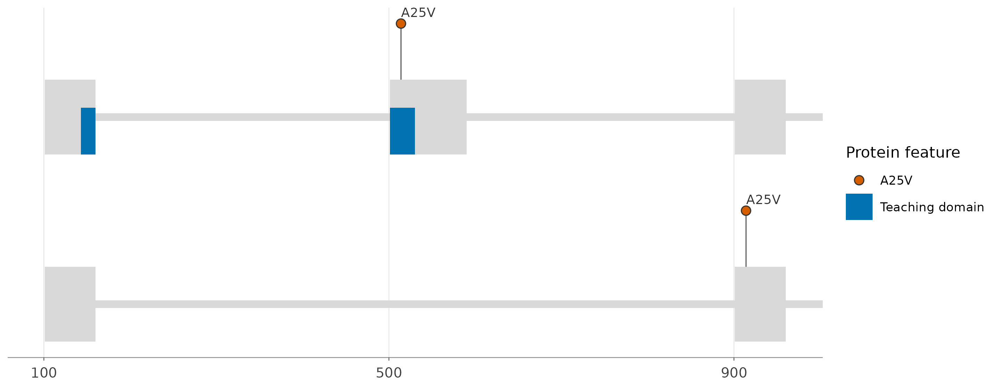
This x axis measures genomic base pairs. The preceding protein lollipop example measures amino-acid positions. Projection uses annotation structure; the plotted mutation is supplied teaching data, not a variant inferred from the synthetic FASTA.
8. Aligned DNA and sequence differences
An alignment ribbon summarizes an interval but hides the bases that
differ. For a short verified pairwise alignment,
alignseq_data() attaches columns to genomic positions and
geom_alignseq() draws the sequence detail.
Present the input
Supply two already aligned strings. A dash is a gap; each start coordinate identifies the first non-gap base in the supplied orientation.
dna <- c(reference = "AC-GTAC", query = "ATCG-AC")
anchors <- data.frame(
sequence = names(dna), start = c(100, 900), strand = "+",
track = names(dna), chr = c("chr1", "chr2")
)
knitr::kable(data.frame(sequence = names(dna), aligned_DNA = unname(dna)))| sequence | aligned_DNA |
|---|---|
| reference | AC-GTAC |
| query | ATCG-AC |
knitr::kable(anchors)| sequence | start | strand | track | chr |
|---|---|---|---|---|
| reference | 100 | + | reference | chr1 |
| query | 900 | + | query | chr2 |
Prepare and inspect the data
The helper returns a data frame rather than an S4 container. It classifies differences relative to the named reference; it does not compute an alignment or infer evolutionary direction.
dna_columns <- alignseq_data(
aligned = dna, anchors = anchors, reference = "reference",
details = c(101, 103), flank = 1
)
knitr::kable(dna_columns[, c("track", "column", "base", "position", "event_type")])| track | column | base | position | event_type |
|---|---|---|---|---|
| reference | 1 | A | 100 | match |
| reference | 2 | C | 101 | substitution |
| reference | 3 | - | NA | insertion |
| reference | 4 | G | 102 | match |
| reference | 5 | T | 103 | deletion |
| reference | 6 | A | 104 | match |
| reference | 7 | C | 105 | match |
| query | 1 | A | 900 | match |
| query | 2 | T | 901 | substitution |
| query | 3 | C | 902 | insertion |
| query | 4 | G | 903 | match |
| query | 5 | - | NA | deletion |
| query | 6 | A | 904 | match |
| query | 7 | C | 905 | match |
Choose the geom, scales, and theme
The row view suits this seven-column alignment. Each panel keeps its own genomic axis. Base callouts have equal column spacing; gaps consume no genomic bases. The geom supplies fixed event colours and nucleotide backgrounds, leaving the plot’s fill scale available for other layers.
ggexon() +
geom_alignseq(data = dna_columns, mode = "rows", size = 3.5) +
facet_wrap(vars(track), ncol = 1, scales = "free_x") +
scale_x_continuous(breaks = scales::breaks_pretty(n = 4)) +
theme_ggexon_track(base_size = 10, show_x_grid = FALSE)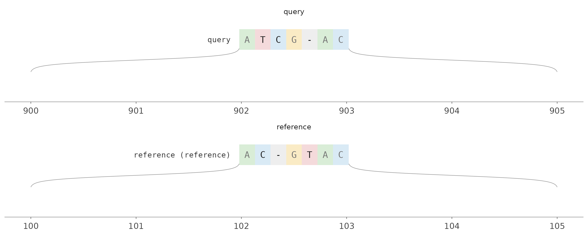
For larger regions, mode = "markers" draws differences
and uses details only for selected callouts. Match
track names to existing annotation panels when adding DNA
detail to a comparison. The AS3MT example uses this
approach at a real locus.
9. Equal gene slots for a presence and order comparison
Base-pair spacing can obscure corresponding gene families across loci. A shared slot template makes occupied and empty positions visible, changing the meaning of the x axis to comparison slots.
Present the input
These synthetic clusters have genes assigned to three slots. Cluster B has no row for slot 2; this input omission alone does not establish gene loss.
slot_input <- data.frame(
cluster = c("A", "A", "A", "B", "B"),
position = c(100, 300, 1000, 500, 900),
slot = c("s1", "s2", "s3", "s1", "s3"),
strand = c("+", "-", "+", "-", "+")
)
knitr::kable(slot_input)| cluster | position | slot | strand |
|---|---|---|---|
| A | 100 | s1 | + |
| A | 300 | s2 | - |
| A | 1000 | s3 | + |
| B | 500 | s1 | - |
| B | 900 | s3 | + |
Prepare the plotting data
Retain genomic positions in x. The strip scale maps
these to the explicit template rather than requiring us to overwrite
source coordinates.
Choose the geom, scales, facet, and theme
geom_genebox() uses equal-size squares with strand
arrows. strip_scale_x() reserves every slot, including
unoccupied ones. scale_x_facet_labels() names each facet’s
slots, and coord_fixed() keeps boxes square. The clean
theme retains ordinary axis labels.
ggexon(slot_data) +
geom_genebox(data = slot_data, aes(fill = slot), box_size = 0.65) +
facet_grid(. ~ cluster) +
strip_scale_x(slot_order = slot_order, guide = "none") +
scale_x_facet_labels(
cluster, labels = list(A = c("A1", "A2", "A3"), B = c("B1", "B2", "B3"))
) +
scale_fill_manual(values = c(s1 = "#0072B2", s2 = "#D55E00", s3 = "#009E73")) +
coord_fixed(ratio = 1) +
theme_ggexon_clean(base_size = 10) +
theme(axis.title = element_blank(), axis.text.y = element_blank(),
panel.grid = element_blank(), legend.position = "none")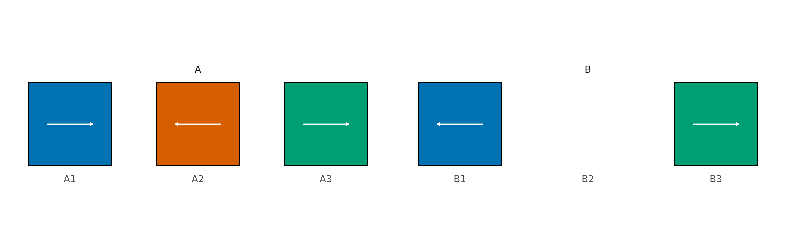
The x axis now names supplied slots, not base pairs. With Syn-backed
data, geom_genebox(anchor = "start"),
"middle", or "end" chooses the coding anchor
before scaling. See the Hox
example for real annotations, slot curation, and anchor
comparisons.
10. Align genomic tracks to a tree
A phylogenetic ordering can make a multi-genome comparison easier to read. ggexon aligns one spanning rectangular tree to genomic rows without manual positioning of separate plots.
Present the input
Reuse the synthetic gene intervals from example 5 and supply a
synthetic Newick tree. Its branch lengths are illustrative. This
optional example requires ape and ggtree.
tree_text <- "(reference:0.1,query:0.2);"
tree_text
#> [1] "(reference:0.1,query:0.2);"
knitr::kable(genes)| track | xmin | xmax | y | strand | gene |
|---|---|---|---|---|---|
| reference | 100 | 250 | 1 | + | A |
| reference | 400 | 600 | 1 | - | B |
| query | 1100 | 1300 | 1 | + | A |
| query | 1600 | 1750 | 1 | - | B |
Prepare the objects
Tree-tip names must match track IDs, or be mapped with the
individual argument to
geom_genomic_tree().
tree_available <- requireNamespace("ape", quietly = TRUE) &&
requireNamespace("ggtree", quietly = TRUE)
if (tree_available) {
teaching_tree <- ape::read.tree(text = tree_text)
tree_tracks <- transform(genes, track = as.character(track))
}Choose the geom, scales, facet, and theme
geom_genomic_tree() attaches the tree;
facet_genomictree() orders and aligns the panels. Genomic x
ranges and tree branch lengths have separate scales and meanings. This
compact view hides the branch-length ruler; branch lengths remain
specified in the Newick input.
if (tree_available) {
ggexon(tree_tracks) +
geom_genetag(aes(fill = gene), show_label = FALSE) +
geom_genomic_tree(tree = teaching_tree, tree_width = grid::unit(1.2, "in")) +
facet_genomictree(scales = "free_x", show_tree_x_axis = FALSE) +
scale_fill_manual(values = c(A = "#0072B2", B = "#D55E00")) +
scale_x_continuous(labels = scales::label_number()) +
theme_ggexon_genomictree(base_size = 10)
} else {
cat("Install ape and ggtree to render this optional example.")
}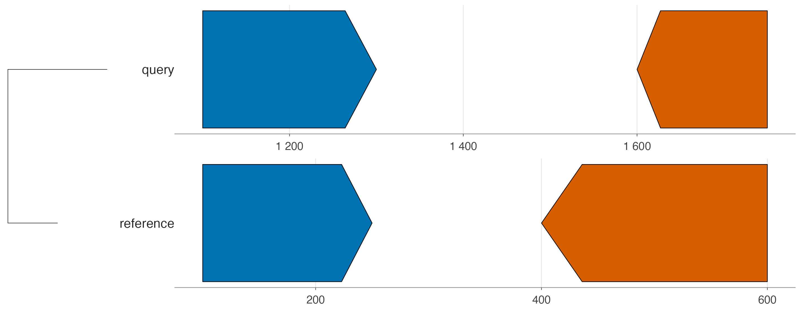
For repeated multi-locus comparisons, store comparable windows in a
SynLocusSet, attach it with add_locus_set(),
and use use_locus_grid(). This records the chosen loci
alongside the individuals.
11. Correct an annotation and compare the result
A gene-model correction is easier to review when it remains attached to the annotation and you can still plot the original. A patch records the target, replacement features, and a name for the change.
Present the correction
Shorten gene A’s middle exon from 590 to 560 in this synthetic exercise. Supply the complete corrected gene model, including its unchanged children.
corrected_ranges <- query_features(model, genes = "geneA", feature_type = NULL, all = TRUE)
change <- as.character(S4Vectors::mcols(corrected_ranges)$type) %in% c("exon", "CDS") &
BiocGenerics::start(corrected_ranges) == 501
BiocGenerics::end(corrected_ranges)[change] <- 560L
knitr::kable(as.data.frame(corrected_ranges)[,
c("start", "end", "type", "gene_id", "transcript_id")])| start | end | type | gene_id | transcript_id |
|---|---|---|---|---|
| 101 | 960 | gene | geneA | NA |
| 101 | 960 | transcript | geneA | A_full |
| 101 | 160 | exon | geneA | A_full |
| 501 | 560 | exon | geneA | A_full |
| 901 | 960 | exon | geneA | A_full |
| 101 | 160 | CDS | geneA | A_full |
| 501 | 560 | CDS | geneA | A_full |
| 901 | 960 | CDS | geneA | A_full |
| 101 | 960 | transcript | geneA | A_skip |
| 101 | 160 | exon | geneA | A_skip |
| 901 | 960 | exon | geneA | A_skip |
| 101 | 160 | CDS | geneA | A_skip |
| 901 | 960 | CDS | geneA | A_skip |
Construct and apply the patch
correction <- SynAnnotationPatch(
name = "shorter-middle-exon", target_ids = "geneA", mode = "replace",
patch_data = corrected_ranges
)
corrected_model <- patch_annotation(model, correction)
names(list_patches(corrected_model))
#> [1] "shorter-middle-exon"patch_annotation_from_gff() imports corrections from a
small GFF. Replacing models clears stale sequence caches; recompute
derived sequences afterwards.
reset_patches() clears all recorded patches and restores
the base feature annotation. A removal is also recorded as a patch, so
it can be inspected and reset in the same way. These operations return
updated objects; model remains available for the comparison
below.
restored_model <- reset_patches(corrected_model)
length(list_patches(restored_model))
#> [1] 0
without_gene_b <- patch_annotation(
model, patch = NULL, target_ids = "geneB", mode = "remove",
name = "remove-gene-b"
)
names(list_patches(without_gene_b))
#> [1] "remove-gene-b"
unique(as.character(S4Vectors::mcols(annotation_data(without_gene_b))$gene_id))
#> [1] "geneA"Choose the geom, scales, facet, and theme
Retain the same base-pair scale before and after to compare the
boundary. Use uncompressed geom_exon2() models so the
direction arrows sit at the terminal exons in this compact
comparison.
before <- load_annotation(SynIndividual(
annotation_file = gtf_file, annotation_format = "gtf", id = "before"
))
after <- load_annotation(SynIndividual(
annotation_file = gtf_file, annotation_format = "gtf", id = "after"
))
after <- patch_annotation(after, correction)
curation <- add_individual(SynSpecies("Annotation curation"), before)
curation <- add_individual(curation, after)
ggexon(curation) +
geom_exon2(aes(fill = transcript_id), chr = "chr1", subset = c(80, 980),
compress_introns = FALSE, arrow_width = 12) +
facet_genomics(vars(track), ncol = 1, scales = "fixed", strip.position = "left") +
scale_fill_manual(values = transcript_colours) +
scale_panel_annotation("fixed_y") +
scale_x_continuous(breaks = c(100, 500, 900)) +
theme_ggexon_track(base_size = 10) +
theme_ggexon_side_strips("left", base_size = 10)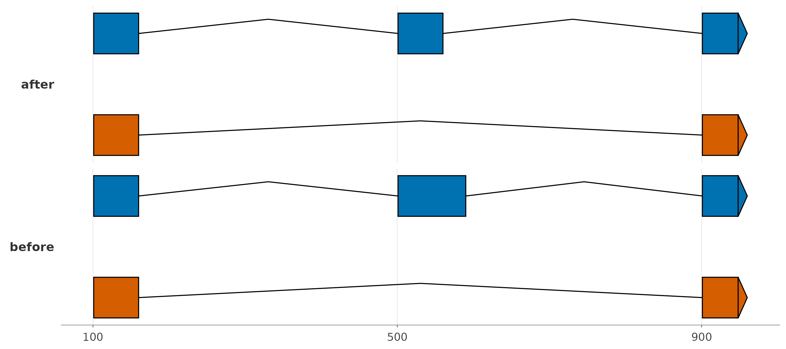
12. Query a VCF layer and mark variant positions
A VCF records allele changes at genomic positions. The feature
annotation and variant layer remain separate: attaching a VCF does not
change the gene model. This short example reuses model from
the first example.
Present the input
Create three synthetic single-nucleotide variants on the same
chr1 as the teaching GTF. VCF POS uses
one-based coordinates; these example alleles are teaching labels and
have not been checked against a reference FASTA.
vcf_lines <- c(
"##fileformat=VCFv4.2",
"#CHROM\tPOS\tID\tREF\tALT\tQUAL\tFILTER\tINFO",
"chr1\t125\tv1\tA\tG\t60\tPASS\t.",
"chr1\t535\tv2\tC\tT\t80\tPASS\t.",
"chr1\t925\tv3\tG\tA\t50\tPASS\t."
)
cat(vcf_lines, sep = "\n")
#> ##fileformat=VCFv4.2
#> #CHROM POS ID REF ALT QUAL FILTER INFO
#> chr1 125 v1 A G 60 PASS .
#> chr1 535 v2 C T 80 PASS .
#> chr1 925 v3 G A 50 PASS .
vcf_file <- tempfile(fileext = ".vcf")
writeLines(vcf_lines, vcf_file)Construct and inspect the object
Attach a named SynVCFAnnotation, retrieve it, and query
the displayed interval. Plain-text VCF is sufficient for this small
example. Large BGZF VCFs can use a tabix index for regional access. BCF
parsing is unavailable.
variant_model <- add_annotation(
model, SynVCFAnnotation(name = "variants", vcf_file = vcf_file)
)
variant_rows <- as.data.frame(query_variants(
get_annotation(variant_model, "variants"),
chr = "chr1", start = 80, end = 980
))
knitr::kable(variant_rows[, c("CHROM", "POS", "ID", "REF", "ALT")])| CHROM | POS | ID | REF | ALT |
|---|---|---|---|---|
| chr1 | 125 | v1 | A | G |
| chr1 | 535 | v2 | C | T |
| chr1 | 925 | v3 | G | A |
variant_rows$allele <- paste0(variant_rows$REF, ">", variant_rows$ALT)Choose the geoms, scales, and theme
Use the stored feature annotation for exon models and an ordinary
geom_vline() for the queried variant positions. Both use
the same genomic x coordinates. The lines mark sites across transcript
rows; they do not represent frequencies, coverage, or allele-specific
transcript structures.
vcf_plot <- ggexon(variant_model) +
geom_exon(chr = "chr1", subset = c(80, 980), fill = "grey65",
transcript_arrow_length = 25) +
geom_vline(
data = variant_rows, aes(xintercept = POS, colour = allele),
linewidth = 0.6, linetype = "dashed", inherit.aes = FALSE
) +
scale_colour_manual(values = c("A>G" = "#0072B2", "C>T" = "#D55E00", "G>A" = "#009E73"),
name = "REF > ALT") +
scale_x_continuous(breaks = c(100, 500, 900), labels = scales::label_comma()) +
theme_ggexon_track(base_size = 10, show_legend = TRUE)
vcf_plot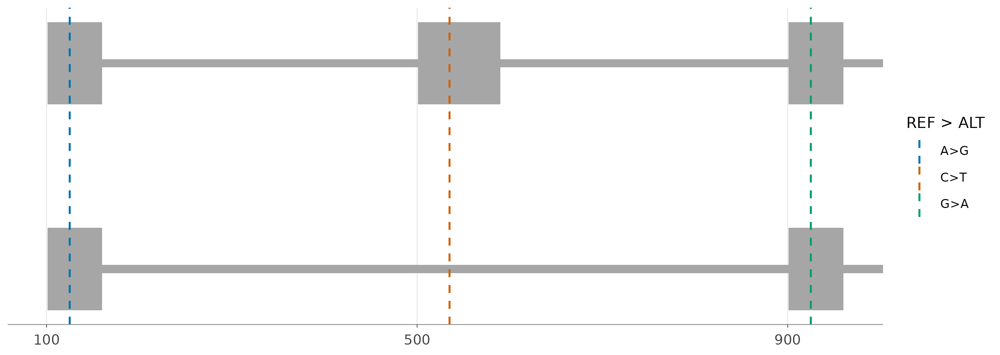
Choose a view for your question
| Question | Object or preparation | Geometry | Scale and theme |
|---|---|---|---|
| Which exons and isoforms are annotated? |
SynIndividual + features |
geom_exon() |
Genomic bp; track theme |
| How do exon structures compare across long introns? | Feature layer | geom_exon2() |
scale_x_ggexon_genomic(); piecewise guide |
| What is the order and direction of genes? | Feature layer + plot labels |
geom_genetag(), geom_genelabel()
|
Genomic bp or strip scale; track theme |
| Which intervals align between genomes? |
SynSpecies + SynPairAlignment
|
geom_nuclink() |
Independent genomic x; pairwise theme |
| Which curated genes or blocks correspond? | Matched interval table | geom_synteny_link() |
Shared family palette; pairwise theme |
| How does signal vary across a locus? | SynBigWigAnnotation |
geom_coverage() |
Genomic x; explicit coverage y policy |
| Where are protein domains and mutations? | Mutation and domain tables/layers |
geom_protein_lollipop(), geom_motif(),
geom_aa_variant()
|
Protein residues or projected genomic bp |
| Where are genomic variants recorded? |
SynVCFAnnotation + query_variants()
|
Exons + ordinary geom_vline()
|
Genomic bp; track theme |
| Which bases differ in an existing alignment? | alignseq_data() |
geom_alignseq() |
Anchored genomic coordinates; track theme |
| Which comparison slots are occupied? | Gene-slot table | geom_genebox() |
strip_scale_x(), facet labels; clean theme |
| How do loci relate to a supplied tree? | Matching tracks and tree | geom_genomic_tree() |
facet_genomictree(); genomic-tree theme |
theme_ggexon_base() is the common background-free
foundation; theme_ggexon_clean() keeps ordinary axes and
grids. Choose the track theme when y only positions annotations; retain
a numeric y axis for quantitative summaries. Side-strip styling
supplements a theme and must match the facet’s
strip.position. Add ordinary theme() overrides
after the complete theme.
Export a saved plot object with explicit dimensions and inspect the
result. For example,
ggsave("exon-models.pdf", plot = p_exons, width = 9, height = 3.5)
exports the first model view.
The Classes, Geoms, Facets, and Guides article provides the full object hierarchy and less common workflows. The linked biological examples expand these recipes with documented sources.